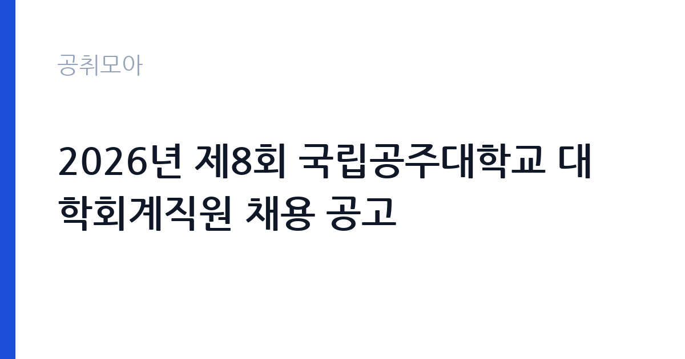

[국가기관] 2026년 제8회 국립공주대학교 대학회계직원 채용 공고
국립공주대학교 · 충남 · 마감 2026-10-15 (D-7) · 출처 나라일터

한눈에 보는 모집 조건
| 기관 | 국립공주대학교 |
|---|---|
| 공고명 | 2026년 제8회 국립공주대학교 대학회계직원 채용 공고 |
| 고용형태 | 정규직 |
| 근무지 | 충남 |
| 게시일 | 2026-10-08 |
| 마감일 | 2026-10-15 (D-7) |
지원자격, 이렇게 읽으세요
- 대학회계직(미화원) 1명 기간제근로자(조리사) 1명 기간제근로자(사무원Ⅰ
- 접수 ~2026-10-15 마감
- 세부 조건은 원문 공고문 확인
모집 분야는 미화원과 조리사, 사무원으로 나뉘며 선발 직급은 대학회계직과 기간제근로자로 구분됩니다. 미화원 1명은 대학회계직으로 채용되고, 조리사 1명과 사무원Ⅰ·Ⅱ 각 1명은 기간제근로자로 채용됩니다. 자격요건은 직렬별로 상이하게 설정되어 있으므로 공고문 필독이 필수입니다. 일반적으로 대학 미화·조리 직렬은 학력이나 자격증보다 실무 경력과 근무 가능 여부를 중시하며, 사무원 직렬은 문서 작성 능력과 행정 실무 경험을 평가합니다. 응시 방법은 우편 접수와 방문 접수이며, 온라인 접수는 운영되지 않으니 마감일 우체국 소인 유효 여부와 방문 접수 마감 시각을 공고문에서 반드시 확인하셨으면 합니다.
이 공고의 포인트
이 공고의 가장 큰 포인트는 미화원 1명을 대학회계직으로 선발한다는 점입니다. 국립대학의 대학회계직은 무기계약 형태의 안정적인 일자리로, 기간제와 달리 계약 갱신 부담 없이 정년까지 근무할 수 있는 구조입니다. 공주대학교는 공주와 천안, 예산에 캠퍼스를 둔 거점 국립대학으로, 교직원 복지와 근무 안정성이 지역사회에서 높게 평가받고 있습니다. 조리사와 사무원 기간제 자리도 대학 행정 현장 경험을 쌓기에 좋은 발판이 되며, 이후 대학회계직이나 공무직 채용에 지원할 때 실무 경력으로 인정받을 수 있습니다. 접수 기간이 7일로 짧다는 점도 경쟁자의 준비 시간을 제한하므로, 서류를 미리 갖춰 둔 분께 유리한 공고입니다.
전형은 어떻게 진행되나
선발 방법은 서류전형과 면접전형으로 진행됩니다. 과거 공주대학교 대학회계직원 채용(2026년 제2회, 제7회)도 서류와 면접 중심이었으며 필기시험은 운영되지 않았습니다. 서류전형에서는 지원자격 충족 여부와 직무 관련 경력, 자기소개서의 성실성을 확인합니다. 면접전형은 직무 이해도와 근무 의지, 조직 적응력을 평가하는 방식으로 진행될 가능성이 큽니다. 접수 기간은 2026년 10월 8일부터 10월 15일까지이며, 우편과 방문으로만 접수합니다. 문의처는 041-850-8074이며, 접수 마감일에는 문의가 몰리므로 궁금한 사항은 접수 초반에 확인하시는 편이 안전합니다.
원문에서 확인한 전형 방식
○ 모집분야 : 미화원, 조리사, 사무원 ○ 선발직급 : 대학회계직, 기간제근로자 ○ 고용형태 - 미화원(대학회계직) 1명 - 조리사(기간제근로자) 1명 - 사무원Ⅰ(기간제근로자) 1명 - 사무원Ⅱ(기간제근로자) 1명 ○ 자격요건 : 직렬별 상이, 공고문 필독 ○ 접수기간 : 2026. 10. 8.(목)~10. 15.(목) ○ 응시방법 : 우편 및 방문 접수 ○ 문의처 : 041-850-8074
이런 분께 추천해요
- 정년이 보장되는 안정적인 일자리를 원하시는 분께 추천합니다. 미화원 대학회계직은 무기계약 성격으로 장기 근무가 가능합니다.
- 충남 공주와 천안, 예산 인근에 거주하시며 통근이 가능한 분께 적합합니다. 국립대학 캠퍼스 근무로 출퇴근 여건이 안정적입니다.
- 조리사 자격증이나 행정 사무 경력을 보유하고 대학 현장 경험을 쌓고 싶으신 분께도 기간제 자리가 좋은 기회가 됩니다.
지원 전 체크리스트
- 지원하려는 직렬이 대학회계직인지 기간제근로자인지를 먼저 구분하십시오. 고용 형태에 따라 계약 기간과 처우가 다릅니다.
- 우편 접수 시 마감일 소인 유효 여부를 공고문에서 확인하십시오. 방문 접수는 접수처와 운영 시간을 미리 파악하십시오.
- 직렬별 자격요건이 상이하므로 본인의 경력과 자격증이 해당 직렬 요건에 부합하는지 대조하십시오.
- 자기소개서에는 해당 직렬의 실무 경험(미화·조리·사무)을 구체적으로 기술하십시오. 막연한 포부보다 수행 가능한 업무 중심이 좋습니다.
모집 일정과 제출 타이밍
원서 접수 기간은 2026년 10월 8일부터 10월 15일까지입니다. 접수 첫날부터 서류를 준비해 10월 13일 이전에 접수하는 것을 권장합니다. 우편 접수는 배송 지연을 감안해 최소 이틀의 여유를 두십시오. 서류전형 합격자 발표와 면접 일정은 접수 마감 이후 국립공주대학교 홈페이지 채용 소식란에 게시될 예정이므로, 접수 후에도 게시판을 주기적으로 확인하셔야 합니다. 면접은 마감 후 1~2주 이내에 실시되는 것이 국립대학 채용의 일반적인 흐름입니다.
직무 이해하기: 국가기관
대학회계직 미화원은 캠퍼스 건물과 강의실, 화장실 등 교육 시설의 청소와 환경 관리를 담당합니다. 조리사는 교직원 식당과 학생 식당에서의 조리 업무를 맡으며, 사무원은 학과와 행정부서의 행정 지원과 문서 관리, 민원 응대를 수행합니다. 국립공주대학교는 공주와 천안, 예산 3개 캠퍼스를 운영하는 종합 국립대학으로, 대학회계직원은 국가공무원이 아닌 대학회계 예산으로 채용되는 직원이지만 국립대학 특유의 안정적인 근무 환경을 공유합니다. 방학 기간에도 시설 관리와 행정 업무가 이어지므로 연중 근무 리듬을 이해하고 지원하는 것이 좋습니다.
자기소개서 작성 팁
자기소개서에서는 해당 직렬의 실무 경험을 수치와 함께 제시하십시오. 미화직이라면 담당했던 시설 규모와 인원, 조리직이라면 일일 배식량과 위생 관리 경험을 쓰시는 편이 설득력이 있습니다. 사무원 지원 시에는 문서 작성과 엑셀 활용, 민원 응대 경험을 구체적인 사례로 풀어내십시오. 국립대학이라는 근무 환경에 대한 이해도 함께 보여주십시오. 학생과 교직원이 함께 생활하는 공간이라는 점을 언급하며 서비스 마인드를 강조하시면 좋은 평가를 받을 수 있습니다. 분량은 간결하게, 경력 위주로 작성하시는 것을 권장합니다.
면접 준비 포인트
면접에서는 직무 수행 능력과 근무 지속 의지를 중점적으로 확인합니다. 미화와 조리 직렬은 실제 업무 수행 가능 여부와 체력, 위생 관념을 묻는 질문이 나오며, 사무원 직렬은 행정 실무 이해도와 컴퓨터 활용 능력을 확인합니다. 국립대학 면접관의 단골 질문인 지원 동기와 장기 근무 계획에 대해서는 캠퍼스 근무의 의미를 담아 답변을 준비하십시오. 복장과 태도는 단정하게, 답변은 짧고 명확하게 하시는 편이 좋습니다. 예상 질문에 대한 답변을 미리 정리해 2분 이내로 말하는 연습을 하시길 권장합니다.
급여·근무조건 읽는 법
보수는 직렬과 고용 형태에 따라 다릅니다. 참고할 만한 자료로, 2026년 7월 게시된 국립공주대학교 천안캠퍼스 미화원 기간제근로자 공고(알바천국 게시)에는 연봉 29,540,000원이 명시되어 있으며 2026년 최저시급 10,320원을 기준으로 산정되었습니다. 대학회계직 미화원의 보수는 기간제보다 높은 수준에서 대학 보수 규정에 따라 책정되며, 명절상여금과 정액급식비 등 수당이 별도로 지급되는 것이 국립대학의 일반적인 구조입니다. 정확한 보수표는 이번 공고의 첨부 공고문에서 확인하셔야 하며, 본문에 안내된 문의처(041-850-8074)로도 문의가 가능합니다. 경쟁률과 합격선은 공개되지 않았으므로 원문에서 확인하시기 바랍니다.
자주 묻는 질문
- 미화원 대학회계직과 기간제근로자의 차이는 무엇입니까?
대학회계직은 무기계약 성격으로 계약 갱신 없이 정년까지 근무할 수 있는 안정적인 자리입니다. 기간제근로자는 계약 기간이 정해져 있으며 기간 만료 시 계약이 종료됩니다. 보수와 복리후생에서도 차이가 있으므로 공고문에서 직렬별 조건을 대조하십시오. - 접수는 온라인으로도 가능합니까?
이번 채용은 우편 접수와 방문 접수만 운영됩니다. 온라인 접수는 제공되지 않으니 접수처 주소와 마감 시각을 공고문에서 확인하시고, 우편 접수 시에는 배송 기간을 감안해 여유 있게 발송하십시오. - 근무지는 어디입니까?
국립공주대학교는 공주와 천안, 예산에 캠퍼스를 두고 있습니다. 과거 채용에서는 직렬별로 근무 캠퍼스가 지정되었으므로, 이번 공고의 모집 분야별 근무지를 첨부 공고문에서 반드시 확인하십시오.
함께 보면 좋은 공고
[국가기관] 26년 서초경찰서 무기계약직 근로자[시설관리] 채용 공고문[제 2026-4호] — 마감 2026-10-19[국가기관] 행정안전부 대변인실 디지털소통팀 공무직근로자(행정실무원, 장애인구분) 채용 공고 — 마감 2026-10-20[국가기관] 2026년 제5회 국립정신건강센터 직원채용 공고(공무직근로자) [조리원, 연구원] — 마감 2026-10-16출처: 나라일터 공개정보를 바탕으로 공취모아가 정리한 안내글입니다. 모집 조건·일정은 변경될 수 있으니 지원 전 반드시 원문 공고문을 확인하세요. 본 글은 정보 제공용이며 합격을 보장하지 않습니다.